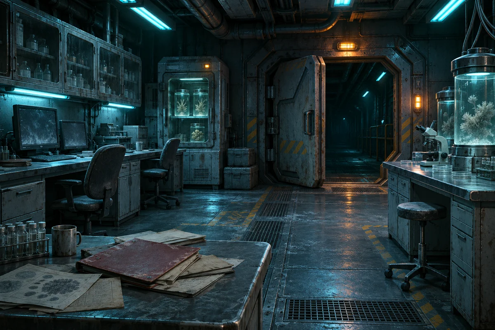

01 / Explore
Пустая станция
Множество следов
Лаборатории, технические отсеки и помещения, которых нет на карте. Исследуй их, чтобы собрать историю исчезнувшего экипажа.
- Лаборатории
- Техотсеки
- Неизвестные зоны